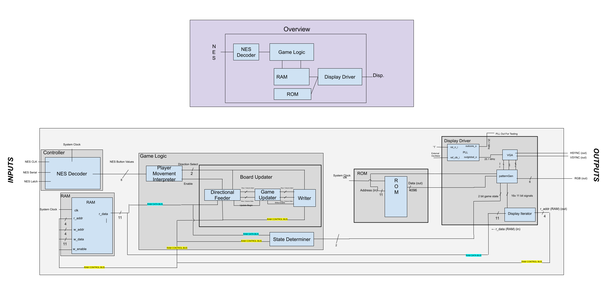
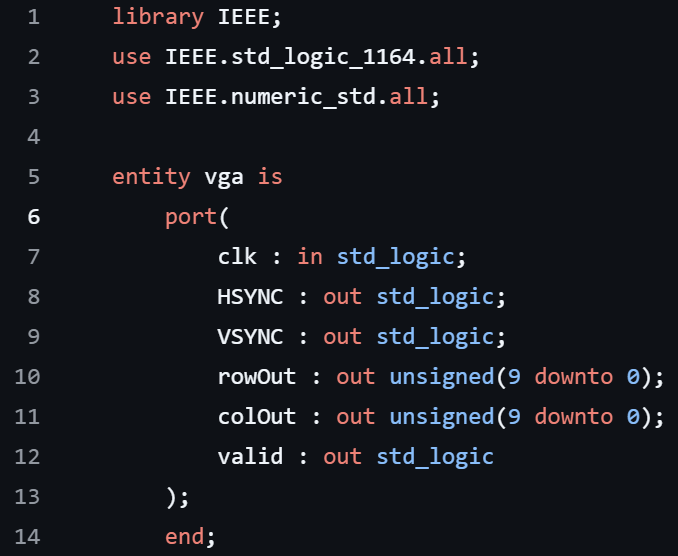
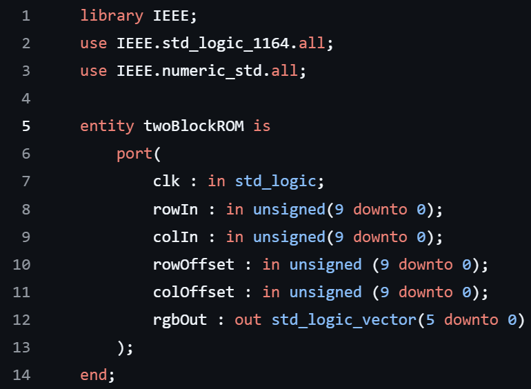

Project mission: recreate the full 2048 gaming experience using only VHDL on an FPGA — graphics rendering, game logic, and user input, all in hardware.
Overview
For the final project of my Digital Logic course, I collaborated with a small group to implement the popular 2048 game entirely in VHDL on an iCE40 FPGA development board. The game outputs full VGA graphics and supports user input via a classic NES controller, enabling a complete gaming experience on custom hardware.

Game logic & graphics pipeline
At the core of the project was the game logic, which required careful state management to handle tile movement, merging, and score updates. On top of that, I developed a custom graphics pipeline to render the board and tiles on a VGA display under strict timing requirements for synchronization signals. Each tile was stored in its own ROM block for efficient fetch and rendering during gameplay. The graphics system also required tightly timed pixel-clock generation, horizontal-sync, and vertical-sync signals to maintain a stable display.


Implementation wasn't trivial — we had to fit within the FPGA's resource constraints while keeping gameplay smooth and the controls responsive. The final product successfully recreated the addictive 2048 experience and showed off what VHDL can do for complex hardware-only system design.